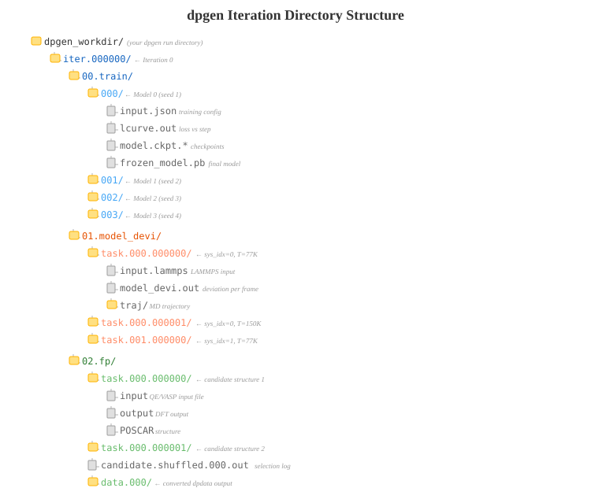

Ch 9: Running dpgen#
You’ve written param.json. You’ve written machine.json. You’ve checked the type_map ordering three times. The pseudopotentials are in the right directory. The container is built. The GPU node is booked.
Now you actually have to press Enter.
I stared at that blinking cursor for probably 30 seconds before I hit it the first time. Because a shocking number of dpgen runs die in the first 30 seconds. Not after iteration 3. Not during DFT. In the first half-minute. And every one of those deaths is a configuration error that you could have caught before launching.
So let’s walk through the launch, the directory structure, the state file that controls everything, and every way the first minute can go wrong. Then you’ll be ready.
The Command#
One command. Two arguments.
$ dpgen run param.json machine.json
That’s it. That’s the entire active learning signal. dpgen reads both files, validates them (loosely, I’ll be honest), and starts the iteration loop from Ch 6: Train, Explore, Label, repeat.
Hit enter. Watch what happens.
Parses
param.jsonandmachine.jsonReads
record.dpgen(if it exists) to figure out where it left offLoads the initial training data from
init_data_sysCreates
iter.000000/00.train/and starts training 4 models
If everything is configured correctly, you’ll see log output scrolling by within a few seconds. If something is wrong, you’ll see a Python traceback. There is very little middle ground. dpgen either starts running or falls over immediately. No gentle warnings. No “are you sure?” No confirmation dialog. Just success or a stack trace.
Key Insight
dpgen is a blocking, long-running process. It doesn’t submit itself to a queue and exit. It sits in your terminal, orchestrating everything: submitting training jobs, waiting for them to finish, submitting LAMMPS jobs, waiting again, submitting DFT jobs, waiting again. dpgen is the conductor. The orchestra plays on the cluster, but the conductor needs to stay alive for the entire concert.
This has a major implication: if your terminal dies, dpgen dies. The training jobs on the GPU might keep running to completion, but nobody is there to collect the results and kick off the next stage. We’ll deal with this in a moment.
Running Inside Apptainer#
On most HPCs, you’re not running dpgen natively. You’re running it inside a container. If you followed the Apptainer setup (Practical: Apptainer), here’s what the actual launch command looks like:
$ apptainer exec --nv --writable-tmpfs \
--bind /home:/home \
--bind /scratch:/scratch \
--bind /opt/pbs:/opt/pbs \
~/deepmd-dpgen.sif \
bash -c 'export PATH=/opt/pbs/default/bin:$PATH && cd /scratch/your_username/project/dpgen && dpgen run param.json machine.json'
Yeah. That’s a mouthful. Let me rip it apart so you know what every piece does and what breaks if you remove it.
Config Walkthrough
apptainer exec: Run a command inside the container image. The container has dpgen, DeePMD-kit, and LAMMPS pre-installed. The host doesn’t.--nv: GPU passthrough. Exposes the host’s NVIDIA drivers to the container. Without this, DeePMD training and LAMMPS exploration can’t see the GPU. Training falls back to CPU and takes 10-50x longer. You’ll know you forgot this whendp trainruns but suspiciously slowly, like it’s thinking really hard about each step. I learned this the expensive way.--writable-tmpfs: The container image (.sif) is read-only by default. Some tools need to write temp files (lock files, caches,.pycbytecode). This flag creates a writable overlay in memory. Without it, you get random “Read-only file system” errors from Python packages that want to write cache directories.--bind /home:/home: Mount the host’s/homefilesystem into the container at the same path./home/your_username/inside the container points to the same files as outside.--bind /scratch:/scratch: Same for/scratch. Your training data, POSCARs, pseudopotentials all live on scratch. Without this bind, the container can’t see any of it. dpgen crashes immediately with “No such file or directory” on yourinit_data_prefixpath.--bind /opt/pbs:/opt/pbs: This is the one everyone forgets. PBS/Torque scheduler commands (qsub,qstat,qdel) live in/opt/pbs/. When dpgen submits DFT jobs via theTorquebatch_type in machine.json, it callsqsubfrom inside the container. If/opt/pbsisn’t mounted,qsubdoesn’t exist. Every fp job submission fails. dpgen says “command not found” and you stare at it wondering what command.export PATH=/opt/pbs/default/bin:$PATH: Even with the bind mount, the container’s PATH doesn’t include the PBS binaries. This adds them. The bind mount makes the files visible. The PATH makes them findable. Two separate problems.cd ... && dpgen run param.json machine.json: Navigate to the working directory and launch. Thecdis inside thebash -cbecause the container might start you in a different working directory than you expect.
HPC Reality
The bind mounts you need depend on your HPC. The example above is for an IIT-D style HPC with PBS/Torque and paths at /home, /scratch, and /opt/pbs. Your cluster might use:
/var/spool/pbsinstead of/opt/pbs(Slurm uses a completely different path)/workor/datainstead of/scratchA shared software directory like
/appsor/opt/software
The debugging process is always the same: if dpgen can’t find a file or command, check whether that path is bind-mounted into the container. apptainer exec --nv --writable-tmpfs --bind /your/path ~/container.sif ls /your/path is your diagnostic tool.
Running in screen or tmux: Don’t Lose Your Process#
Here’s the scenario. You SSH into the HPC. You launch dpgen. Iteration 0 starts training. You go to lunch. You come back. Your SSH session timed out. dpgen is dead. Training jobs might still be running on the GPU node somewhere, but dpgen isn’t there to collect the results and move to the next stage. You have to figure out what finished, clean up, and restart.
This happens to everyone exactly once. Then you learn about terminal multiplexers. Don’t be me. Learn before the first time.
screen and tmux create persistent terminal sessions that survive SSH disconnects. Your dpgen process runs inside the multiplexer. SSH dies? The multiplexer keeps running. You reconnect, reattach, and dpgen is still going. Like nothing happened.
Using screen (simpler)#
# Start a new named session
$ screen -S dpgen_run
# You're now inside the screen session. Launch dpgen:
$ apptainer exec --nv --writable-tmpfs \
--bind /home:/home --bind /scratch:/scratch --bind /opt/pbs:/opt/pbs \
~/deepmd-dpgen.sif \
bash -c 'export PATH=/opt/pbs/default/bin:$PATH && cd /path/to/dpgen && dpgen run param.json machine.json'
# Detach: press Ctrl+A, then D
# (dpgen keeps running in the background)
# Reattach later:
$ screen -r dpgen_run
Using tmux (more features)#
# Start a new named session
$ tmux new -s dpgen_run
# Launch dpgen (same command as above)
# Detach: press Ctrl+B, then D
# Reattach later:
$ tmux attach -t dpgen_run
# List running sessions:
$ tmux ls
HPC Reality
Where do you run the screen/tmux session? This depends on your setup. Two common scenarios:
On a login node: dpgen runs on the login node and submits GPU/CPU jobs to the queue. This works if your machine.json uses
TorqueorSlurmbatch types for all three stages. The login node just orchestrates. It doesn’t do heavy compute. Most HPC admins tolerate this because dpgen itself consumes negligible resources (it’s mostly sleeping and pollingqstat).On a GPU node (interactive session): If your machine.json uses
Shellbatch type for training and model_devi (like our mixed-mode config), dpgen needs to be running on the machine with the GPU. You need an interactive job first:# PBS/Torque $ qsub -I -l select=1:ncpus=8:ngpus=2 -l walltime=72:00:00 -q gpu_queue # Then start screen/tmux INSIDE the interactive session # (yes, screen/tmux inside an interactive PBS job works)
The catch: interactive jobs have wall-time limits. If your dpgen run takes 5 days and your interactive allocation is 72 hours, you’ll need to restart. This is where
record.dpgensaves you (covered below).
Common Mistake
Starting screen/tmux AFTER entering the interactive job: Some people start screen on the login node, get an interactive allocation inside it, then detach. When they reattach, they’re back on the login node. The interactive job is in a different session entirely. Start the interactive job first, THEN start screen/tmux from within it. Or better yet, use a persistent GPU allocation that you can reattach to. This one will bite you if you get the order wrong.
Iteration Directory Structure#
Once dpgen starts running, it creates a directory structure that mirrors the three-stage loop. Here’s what it looks like after iteration 0 completes. Open that file. I’ll wait.
dpgen_workdir/
├── param.json
├── machine.json
├── record.dpgen
├── dpgen.log
├── pseudo/
│ ├── C.pbe-n-kjpaw_psl.1.0.0.UPF
│ └── H.pbe-rrkjus_psl.1.0.0.UPF
│
├── iter.000000/
│ ├── 00.train/
│ │ ├── 000/ # Model 0
│ │ │ ├── input.json
│ │ │ ├── lcurve.out
│ │ │ ├── frozen_model.pb
│ │ │ └── ...
│ │ ├── 001/ # Model 1
│ │ ├── 002/ # Model 2
│ │ ├── 003/ # Model 3
│ │ └── graph.000.pb # Symlinks to frozen models
│ │ └── graph.001.pb
│ │ └── graph.002.pb
│ │ └── graph.003.pb
│ │
│ ├── 01.model_devi/
│ │ ├── task.000.000000/ # sys_idx=0, temp=77K
│ │ │ ├── input.lammps
│ │ │ ├── model_devi.out
│ │ │ ├── traj/
│ │ │ └── ...
│ │ ├── task.000.000001/ # sys_idx=0, temp=150K
│ │ ├── task.000.000002/ # sys_idx=0, temp=300K
│ │ ├── task.001.000000/ # sys_idx=1, temp=77K
│ │ ├── task.001.000001/ # sys_idx=1, temp=300K
│ │ └── ... # One dir per (system, temperature) combo
│ │
│ └── 02.fp/
│ ├── task.000.000000/ # Candidate structure 1
│ │ ├── input # QE input file
│ │ ├── output # QE output file
│ │ └── ...
│ ├── task.000.000001/ # Candidate structure 2
│ └── ... # Up to fp_task_max dirs
│
├── iter.000001/
│ ├── 00.train/
│ ├── 01.model_devi/
│ └── 02.fp/
│
└── iter.000002/
└── ...
{kind=link}

Fig. 24 The dpgen iteration directory tree. Each iteration creates three subdirectories: 00.train/ (4 model training runs), 01.model_devi/ (LAMMPS exploration tasks), and 02.fp/ (DFT calculations on candidate structures). The record.dpgen file at the root tracks which stages have completed.#
Let me walk through each piece so you know exactly where to look when something goes wrong. Because something will go wrong. That’s not pessimism. That’s experience.
00.train/ – The Training Stage#
Four subdirectories: 000/, 001/, 002/, 003/. One per model. Each contains:
input.json: The DeePMD-kit training input. dpgen generates this from yourdefault_training_param, but with different random seeds for each model, and withtraining_data.systemsautomatically filled in to include all training data accumulated so far.lcurve.out: The learning curve. Loss values at everydisp_freqsteps. This is where you look when you suspect training went sideways.frozen_model.pb: The trained and frozen model. This is what LAMMPS uses in the next stage. That’s your model. Frozen and ready.
At the top level of 00.train/, dpgen creates symlinks: graph.000.pb -> 000/frozen_model.pb, and so on. The LAMMPS exploration stage references these symlinks.
01.model_devi/ – The Exploration Stage#
One subdirectory per LAMMPS simulation. The naming convention is task.{sys_idx:03d}.{combo_idx:06d}. So task.000.000000 is system 0 at the first temperature, task.000.000001 is system 0 at the second temperature. The pattern repeats for each system.
For our iteration 0 with sys_idx = [0, 1, 4] and temps = [77, 150, 300], that’s 3 x 3 = 9 task directories. Nine field trips. Nine chances for the model to discover what it doesn’t know.
Each task directory contains:
input.lammps: The LAMMPS input script. dpgen writes this automatically. It sets up the NVT simulation at the specified temperature, loads all 4 models, and writesmodel_devi.out.model_devi.out: The key output. Columns: step, max_devi_e, min_devi_e, avg_devi_e, max_devi_f, min_devi_f, avg_devi_f. Column 5 (max_devi_f, 0-indexed column 4) is the one dpgen uses for sorting frames into buckets. This file is your diagnostic lifeline. We’ll spend a lot of time with it in Ch 10.traj/: LAMMPS dump files for the trajectory. These can be large.
02.fp/ – The Labeling Stage#
One subdirectory per candidate structure selected for DFT. Same task.{sys_idx}.{task_idx} naming convention.
Each task directory contains:
input: The QE input file (or INCAR/POSCAR for VASP). dpgen generates this fromuser_fp_paramsplus the atomic coordinates extracted from the LAMMPS trajectory frame.output: The QE output after the calculation completes. dpgen parses this with dpdata to extract energy and forces.The pseudopotential files: Copied from
fp_pp_path. Yes, they get copied into every single task directory. One more reason disk space adds up.
Key Insight
The iteration directories are cumulative for training data. When dpgen trains in iter.000001/00.train/, the input.json references training data from init_data_sys PLUS the DFT results from iter.000000/02.fp/. By iteration 3, the training data includes everything from init_data plus all three previous iterations’ DFT outputs. The dataset grows monotonically. The model never forgets what it learned. Each iteration is a semester building on the last.
record.dpgen: The Tiny File That Controls Everything#
This is the part that made it click for me. I want you to understand this file deeply because it will save you when things go wrong. It’s tiny. Plain text. And it controls dpgen’s entire execution flow.
Pull up your record.dpgen after a few stages have completed:
0 0
0 1
0 2
0 3
0 4
0 5
1 0
1 1
Each line is a completed step. The format is iteration_index stage_number. Two numbers, space-separated, one per line. That’s the entire state machine of your multi-day dpgen run, stored in a file you could write by hand in 10 seconds.
Read that again. Seriously. Your entire multi-day run, all the orchestration, all the scheduling, all the job management, boils down to a text file with pairs of integers. And you can edit it with vim to control exactly what dpgen does next.
The 6 Internal Stages#
You might be thinking: “Wait. Three stages per iteration (Train, Explore, Label). Why 6 numbers (0-5)?”
Because each of the 3 conceptual stages has a make step and a run step:
Stage |
Name |
What Happens |
|---|---|---|
0 |
|
Generate training input files, create directories, set up the 4 model training jobs |
1 |
|
Actually run |
2 |
|
Generate LAMMPS input scripts, copy frozen models, set up exploration tasks |
3 |
|
Run LAMMPS simulations, wait for completion, collect |
4 |
|
Analyze model deviations, sort into buckets, select candidates, generate DFT input files |
5 |
|
Submit DFT jobs, wait for completion, parse results, add to training dataset |
So 0 0 means “iteration 0, make_train completed.” 0 1 means “iteration 0, run_train completed.” All the way to 0 5 meaning “iteration 0 is fully done.”
Then 1 0 starts iteration 1. The cycle continues.
Key Insight
The make stages (0, 2, 4) are fast. They just generate files and directories. Seconds, maybe a minute. The run stages (1, 3, 5) are where the actual compute happens: training on GPUs, LAMMPS on GPUs, DFT on CPU nodes. If dpgen crashes, it almost always crashes during a run stage.
Resuming After a Crash#
This is where record.dpgen becomes your best friend. Say dpgen dies halfway through the DFT labeling of iteration 2. Your SSH session dropped. The login node rebooted. Whatever. The last lines in record.dpgen are:
...
2 0
2 1
2 2
2 3
2 4
Stage 2 5 (run_fp for iteration 2) never completed. When you restart dpgen with the same command:
$ dpgen run param.json machine.json
It reads record.dpgen, sees that 2 4 was the last completed step, and picks up at 2 5. It resubmits the DFT jobs (or checks which ones already finished) and continues from there.
No special flags. No resume commands. Just run the same command again. dpgen figures out where it stopped. That’s the whole trick. That’s the recovery strategy.
Re-running a Stage#
Sometimes you need to re-run a specific stage. Maybe the DFT jobs had the wrong walltime and all failed. Maybe you changed a parameter and want to redo the exploration. Here’s what nobody tells you:
Delete the corresponding line (and all lines after it) from record.dpgen.
Example: you want to redo the model deviation stage of iteration 1. The file currently looks like:
0 0
0 1
0 2
0 3
0 4
0 5
1 0
1 1
1 2
1 3
1 4
1 5
Delete everything from 1 2 onward:
0 0
0 1
0 2
0 3
0 4
0 5
1 0
1 1
Restart dpgen. It reruns 1 2 (make_model_devi), 1 3 (run_model_devi), 1 4 (make_fp), and 1 5 (run_fp) for iteration 1. It picked up right where you told it to. Clean.
Common Mistake
Only delete from a line onward. Never delete a line in the middle and leave later lines intact. dpgen reads the file sequentially. If you delete 1 2 but leave 1 3, dpgen sees “1 1 completed, next is 1 2” and reruns it. But the directories from the original 1 3 run still exist and conflict. Always delete the target line AND everything after it. This is not a preference. This is how the file works.
Also: back up record.dpgen before editing. One wrong delete and you could be rerunning days of compute. cp record.dpgen record.dpgen.bak takes one second and could save you a week.
Simulation
Try this: After your first iteration completes, open record.dpgen and read it. It should have exactly 6 lines (stages 0-5 for iteration 0). Verify that the iteration directories match: iter.000000/00.train/, 01.model_devi/, and 02.fp/ should all be populated. This builds intuition for how the state file maps to the filesystem. The file is simple. Understanding it deeply saves you when things go wrong.
dpgen.log: What to Look For#
dpgen writes a log file called dpgen.log in the working directory. It’s verbose. On a multi-iteration run, it grows to thousands of lines. You don’t need to read every line. But you need to know which lines matter.
Healthy Log Messages#
These are the lines that tell you things are working:
INFO: iter.000000 stage 0: make_train
INFO: iter.000000 stage 1: run_train
INFO: system 000 accurate_ratio: 0.7200 candidate_ratio: 0.2100 failed_ratio: 0.0700
INFO: system 001 accurate_ratio: 0.6500 candidate_ratio: 0.2800 failed_ratio: 0.0700
INFO: iter.000000 stage 4: make_fp -- number of fp tasks: 38
INFO: iter.000000 stage 5: run_fp
The accurate_ratio / candidate_ratio / failed_ratio lines are gold. They tell you exactly how the model is performing on each system. You want to see accurate_ratio climbing across iterations. That’s convergence happening in real time. Are you seeing this? That’s the model getting smarter, iteration by iteration, right there in the log.
Warning Signs#
WARNING: all fps of system 002 are accurate, skip
System 2 has converged. 100% of explored frames are accurate. Good if it’s iteration 5. Suspicious if it’s iteration 0 (your trust_lo might be too loose, or the system is genuinely easy).
WARNING: no candidate fps found, skip fp
No structures fell in the candidate range across any system. Either the model is already excellent (unlikely early on) or your trust bounds are miscalibrated. Go look at the actual model_devi.out files. The numbers don’t lie.
Red Flags#
RuntimeError: job 000 failed after 3 retries
A training or LAMMPS or DFT job failed three times in a row. dpgen gave up. The most common causes:
Training: Out of GPU memory (reduce
selor batch size)LAMMPS: Simulation blew up (atoms too close, bad initial structure, timestep too large)
DFT: SCF didn’t converge, walltime exceeded, or missing pseudopotentials
FileNotFoundError: [Errno 2] No such file or directory
A path in param.json or machine.json is wrong. The usual suspects: init_data_prefix, sys_configs_prefix, fp_pp_path, or the source_list scripts in machine.json.
HPC Reality
dpgen.log is written from the perspective of the dpgen process, not the individual jobs. If a DFT calculation fails because QE can’t find a pseudopotential, dpgen.log just says “job failed.” The actual QE error is in iter.XXXXXX/02.fp/task.XXX.XXXXXX/output. You almost always need to dig into the individual task directories to find the real error message. dpgen is the messenger. The real story is in the task directories.
Get comfortable with this pattern:
# Find which fp tasks failed
$ grep -l "convergence NOT achieved" iter.000000/02.fp/task.*/output
# Check a specific failed task
$ tail -50 iter.000000/02.fp/task.000.000012/output
Disk Space Management#
Let me tell you about the time I ran out of disk space mid-iteration and dpgen crashed with a cryptic Python IOError buried in 40 lines of traceback. No clear message. Just… IOError. Deep in some numpy save function. I spent 45 minutes debugging before I ran df -h and saw 0% free. I cannot stress this enough: dpgen eats disk.
Here’s where it goes:
LAMMPS trajectories (
01.model_devi/task.*/traj/): Each trajectory dumps atomic positions at everytrj_freqsteps. A 2M-step trajectory withtrj_freq=1000produces 2000 frames. For a 96-atom system, each frame is 2-4 KB. That’s 4-8 MB per trajectory. With 30 trajectories per iteration, roughly 120-240 MB. Sounds small. It’s not small across 10+ iterations.Training checkpoints (
00.train/*/): DeePMD saves checkpoints everysave_freqsteps. With 1M training steps andsave_freq=10000, that’s 100 checkpoints per model, times 4 models. Each checkpoint: 10-50 MB depending on model size. That’s 4-20 GB per iteration.DFT output files (
02.fp/task.*/): QE output files are modest (a few MB each), but the pseudopotentials get copied into every single task directory. 50 tasks = 50 copies of your UPF files.Work directories (
work/,fp_work/): dpdispatcher’s staging area. Contains copies of input files and job scripts. Accumulates silently. Nobody warns you about this one.
The model_devi_clean_traj Setting#
Your first line of defense. From our param.json:
"model_devi_clean_traj": 3,
This tells dpgen: keep trajectories from only the last 3 iterations. Delete older ones.
When iteration 4 starts, iteration 0’s trajectories get deleted. When iteration 5 starts, iteration 1’s go. The model_devi.out files (which are small) stay. Just the bulky trajectory dumps get cleaned.
Why keep any? Because if something goes wrong and you need to rerun the fp stage, dpgen needs the trajectory files to extract candidate structures. Keeping the last 3 iterations gives you a buffer. Start there. Adjust later.
Config Walkthrough
Values for model_devi_clean_traj:
Value |
Behavior |
When to use |
|---|---|---|
|
Clean ALL previous iteration trajectories after current fp finishes |
Tight on disk. Accept that reruns require redoing exploration |
|
Never clean. Keep everything |
Plenty of disk. Paranoid about reruns |
Integer (e.g., |
Keep last N iterations of trajectories |
The sweet spot. |
Other Disk Space Lessons#
Things I’ve learned the hard way so you don’t have to:
Monitor regularly:
du -sh iter.*/after each iteration. Know your trajectory.disk_io: "none"in QE settings: We already have this in our param.json. It prevents QE from writing wavefunction files, which can be hundreds of MB per calculation. If you forget this, 50 fp tasks can suddenly eat 50 GB. Gone.save_freqin training: Don’t set this too low.save_freq=1000withnumb_steps=1000000means 1000 checkpoints per model. That’s 4000 checkpoints across 4 models. Excessive.10000is fine.Clean up
work/directories: dpdispatcher’s work directories can accumulate, but dpgen usually handles this. Check anyway.
HPC Reality
On shared HPC filesystems, disk quotas are real. Check yours with quota -s or lfs quota (Lustre) before launching a multi-iteration run. A full graphene + H2 dpgen run with 5 iterations, 4 models each, can easily consume 50-100 GB. If you hit quota mid-run, dpgen won’t tell you “disk full.” It’ll crash with an IOError somewhere deep in a Python stack trace that tells you nothing useful. Plan ahead. Clean as you go. Set model_devi_clean_traj. Not optional. Not a suggestion.
Common Startup Failures#
I’ve catalogued the most common ways dpgen dies in the first 60 seconds. These are almost always configuration errors, not dpgen bugs. Here’s the hall of shame.
1. Wrong Paths#
FileNotFoundError: [Errno 2] No such file or directory: '../init_data/set_2atoms/set.000/energy.npy'
The cause: init_data_prefix or init_data_sys paths don’t resolve to actual DeePMD-format data directories. These paths are relative to where you run dpgen run, not relative to where param.json is stored.
The fix: Before launching, verify every path manually:
# From your dpgen working directory (where param.json lives):
$ ls ../init_data/set_2atoms/set.000/
# Should show: box.npy coord.npy energy.npy force.npy type.raw ...
Do this for every entry in init_data_sys. All of them. It takes two minutes and saves you two hours. There is no good reason to skip this step.
2. Missing Pseudopotentials#
FileNotFoundError: pseudo/C.pbe-n-kjpaw_psl.1.0.0.UPF
The cause: fp_pp_path doesn’t contain the files listed in fp_pp_files.
The fix: The obvious check:
$ ls pseudo/
# Should list exactly the files in fp_pp_files
Common variant: filenames with slightly different capitalization or version numbers. C.pbe-n-kjpaw_psl.1.0.0.UPF vs C.pbe-n-kjpaw_psl.1.0.0.upf. Linux cares about case. Linux always cares about case.
3. Container Can’t See Host Paths#
FileNotFoundError: /scratch/username/project/init_data/set_2atoms/set.000/energy.npy
The cause: You bind-mounted /home:/home but your data lives on /scratch and you forgot --bind /scratch:/scratch. The container looks at the path, sees nothing. It’s like looking through a window that isn’t there.
The fix: Every host path that appears anywhere in param.json or machine.json must be accessible inside the container. List all unique path prefixes in your configs and make sure each one has a bind mount.
4. PBS/Slurm Commands Not Found#
FileNotFoundError: [Errno 2] No such file or directory: 'qsub'
The cause: machine.json specifies "batch_type": "Torque" for fp, but qsub isn’t in the container’s PATH.
The fix: Bind-mount the PBS/Slurm installation directory and add it to PATH. For PBS:
--bind /opt/pbs:/opt/pbs
# and inside bash -c:
export PATH=/opt/pbs/default/bin:$PATH
For Slurm, it’s usually --bind /usr/bin/sbatch or wherever your scheduler lives. Check with which qsub or which sbatch on the host.
5. GPU Not Visible#
tensorflow.python.framework.errors_impl.InternalError: CUDA error: no CUDA-capable device is detected
Or for PyTorch/DeePMD v3:
RuntimeError: No CUDA GPUs are available
The cause: You forgot --nv in the Apptainer command. Or you’re running on a login node that doesn’t have a GPU. Or the GPU is allocated to someone else’s job.
The fix: Always use --nv. Make sure you’re on a node with an actual GPU. Verify:
$ apptainer exec --nv ~/deepmd-dpgen.sif nvidia-smi
# Should show your GPU(s)
If nvidia-smi shows nothing or errors out, the problem is at the host/driver level. dpgen can’t fix what the hardware doesn’t have.
6. source_list Scripts Missing or Wrong#
bash: /home/user/scripts/deepmd_container.sh: No such file or directory
The cause: The source_list paths in machine.json point to environment setup scripts that don’t exist or aren’t executable.
The fix: Check every path in source_list for all three sections (train, model_devi, fp). These scripts need to exist AND be readable from inside the container.
# Verify from inside the container
$ apptainer exec --nv --bind /home:/home ~/deepmd-dpgen.sif cat /home/user/scripts/deepmd_container.sh
7. sys_configs POSCAR Not Found#
FileNotFoundError: ../sys_configs/sys_bare/POSCAR
The cause: sys_configs_prefix combined with the entries in sys_configs doesn’t resolve to real files.
The fix: Same as path debugging above. From the dpgen working directory:
$ ls ../sys_configs/sys_bare/POSCAR
$ ls ../sys_configs/sys_4h2/POSCAR
# etc.
Common Mistake
The path resolution trap: init_data_prefix, sys_configs_prefix, and fp_pp_path are all resolved relative to the working directory where you run dpgen run, not relative to where param.json is stored. If you launch dpgen from /scratch/user/project/dpgen/ and your param.json says "init_data_prefix": "../init_data", dpgen looks for /scratch/user/project/init_data/.
This seems obvious until you’re debugging at midnight and you realize you cd’d into the wrong directory before launching.
My recommendation: always cd to the directory containing param.json before running dpgen run. And use pwd to verify. Every single time. I’m serious.
A Pre-Flight Checklist#
Before you press Enter, run through this. Every item takes seconds. The whole list takes under two minutes. Skipping it can cost you hours. I’ve seen this go wrong too many times to not put this here.
# 1. Am I in the right directory?
$ pwd
$ ls param.json machine.json
# 2. Can I see the initial data?
$ ls ../init_data/set_2atoms/set.000/energy.npy
# 3. Can I see the system configs?
$ ls ../sys_configs/sys_bare/POSCAR
# 4. Can I see the pseudopotentials?
$ ls pseudo/C.pbe-n-kjpaw_psl.1.0.0.UPF pseudo/H.pbe-rrkjus_psl.1.0.0.UPF
# 5. Can I see the GPUs? (if using containers)
$ apptainer exec --nv ~/deepmd-dpgen.sif nvidia-smi
# 6. Can I see the job scheduler? (if using PBS/Slurm batch types)
$ apptainer exec --nv --bind /opt/pbs:/opt/pbs ~/deepmd-dpgen.sif bash -c \
'export PATH=/opt/pbs/default/bin:$PATH && which qsub'
# 7. Do the source_list scripts exist?
$ cat /home/user/scripts/deepmd_container.sh
$ cat /home/user/scripts/qe_hpc.sh
# 8. Am I inside screen or tmux?
$ echo $STY # screen: shows session name if inside
$ echo $TMUX # tmux: shows socket path if inside
Eight checks. If all 8 pass, you’re ready. Grab your terminal.
$ screen -S dpgen_run
$ apptainer exec --nv --writable-tmpfs \
--bind /home:/home --bind /scratch:/scratch --bind /opt/pbs:/opt/pbs \
~/deepmd-dpgen.sif \
bash -c 'export PATH=/opt/pbs/default/bin:$PATH && cd /scratch/user/project/dpgen && dpgen run param.json machine.json'
Detach with Ctrl+A, D. Go do something else. Come back in an hour. Check record.dpgen to see how far it’s gotten. If the file has 6 lines, iteration 0 is done. One iteration down. If it has 2 lines, training just finished and exploration is running. The state file tells the whole story.
What’s Next#
dpgen is running. Directories are appearing. Jobs are being submitted. But how do you know if it’s actually working well? How do you read the model deviation output? How do you know if your trust levels are right? How do you spot a run that’s going nowhere?
That’s Ch 10: Monitoring and Troubleshooting. The chapter where you learn to read the patient’s vital signs.